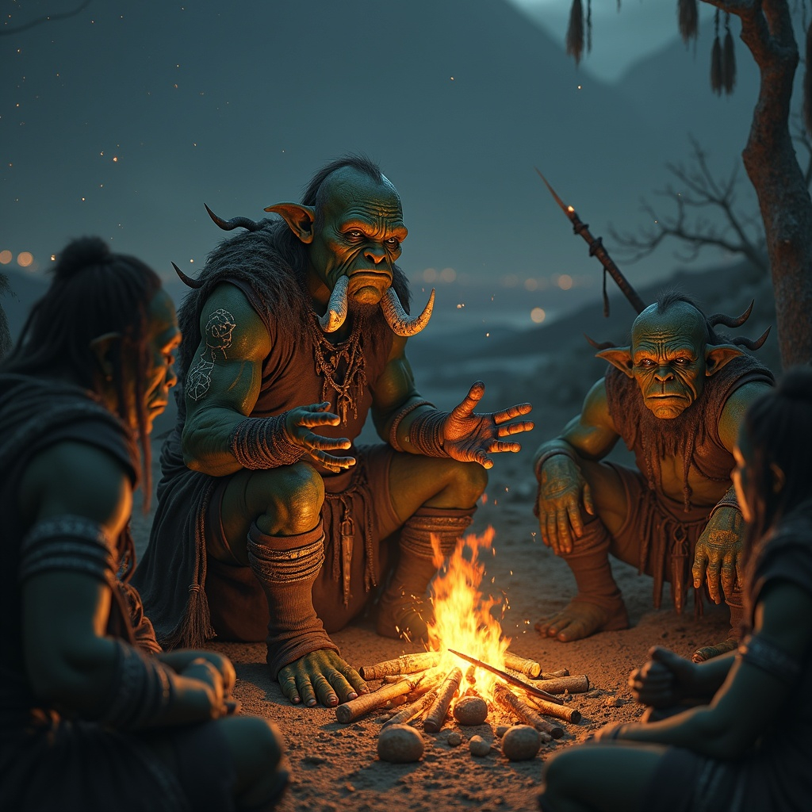

Dragonborn
Origins Shrouded in Mystery
Dragonborn are mystical creatures whispered to be the offspring of dragons and mortals, born from unions that
defy the natural order of Skazka. The species did not walk the cursed realms until after the cataclysmic event
known as Starfall—that night when the very stars bled their secrets into the world and ancient powers stirred from
their slumber. This temporal coincidence implies they are either not native to Skazka's twisted landscape, or that
their sudden manifestation is directly linked to the awakening of the great wyrms that now cast their shadows
across the land.
The truth of their genesis remains as elusive as morning mist in the darkwood forests. Some scholars of forbidden
lore theorize that Starfall tore rifts between realms, allowing these hybrid beings to slip through from distant
planes. Others whisper that the event itself catalyzed some primordial magic, spontaneously birthing the
Dragonborn from places where dragon blood had long ago soaked into Skazka's haunted soil. None are more desperate
to unravel these mysteries than the Dragonborn themselves, for they carry within their very essence questions that
burn like embers in their souls.
Physical Manifestations of Draconic Heritage
The Dragonborn's appearance serves as a living testament to their otherworldly origins, with their coloring
spanning the entire spectrum of shadow and light. Their scales range from the pure, ghostly white of fresh snow on
the Snowpeak Mountains to the deep, abyssal black of moonless nights. Between these extremes lies every
conceivable hue: the crimson of spilled blood, the emerald of deep forest pools, the golden amber of dying
sunlight, and the silver of starlight on still water.
Their markings tell stories written in draconic script across their flesh. Some bear intricate speckles that
shimmer like constellations, while others display bold spots that pulse with inner fire. These patterns are as
unique as fingerprints, and learned individuals claim they can divine a Dragonborn's lineage—and sometimes their
destiny—from these natural tattoos.
The variety in their physical forms speaks to the diverse nature of their draconic ancestry. Some possess
elaborate frills that crown their heads like natural coronets, these delicate membranes often translucent and shot
through with veins that glow faintly in darkness. Others lack these ornaments entirely, their profiles clean and
predatory. Horns, when present, range from the elegant spirals reminiscent of ancient elven architecture to the
brutal, barbed protrusions that seem designed for war. Those who develop the latter often bear additional spines
along their skulls, creating a menacing silhouette that commands both respect and wariness.
Their eyes, perhaps more than any other feature, betray their supernatural nature. They burn with an inner light
that no purely mortal gaze could possess—sometimes the cold fire of winter stars, other times the warm glow of
hearthflames, but always something that speaks of power barely contained within flesh and bone.
Cultural Integration and Divine Recognition
Despite their mysterious origins and often fearsome appearance, Dragonborn have found acceptance among most of
Skazka's diverse peoples. Their integration into existing societies speaks to both their adaptability and the
pragmatic nature of those who dwell in these dangerous lands. In a realm where survival often depends on alliances
forged in necessity, the Dragonborn's obvious power and intelligence make them valuable allies rather than threats
to be eliminated.
Perhaps nowhere is their acceptance more pronounced than among the kobold tribes scattered throughout Skazka's
wildlands. These scaled humanoids have elevated many Dragonborn to the status of living deities, viewing them as
the next step in their own evolutionary journey. Kobold shamans preach that their people will one day ascend to
dragonborn status through acts of devotion and bravery, turning entire tribes into zealous followers who would
gladly die for their draconic champions.
In human settlements, Dragonborn often serve as mediators and advisors, their obvious connection to dragon-kind
lending weight to their words in matters of ancient lore and magical theory.
The Nomadic Nature of a Scattered People
Dragonborn have never established kingdoms or grand cities of their own, a fact that speaks to both their
independent nature and their relatively recent emergence in Skazka. They are wanderers by instinct, perhaps
carrying in their blood the migratory urges of their draconic progenitors. This nomadic tendency has led them to
integrate into existing communities as they see fit, bringing their unique skills and perspectives to enrich the
cultures they choose to call home.
Winter: The Heart of Dragonborn Community
The closest thing to a Dragonborn homeland can be found in the remote town of Winter, nestled in the
forbidding Snowpeak Mountains in Skazka's far north. Here, in this settlement where the very air carries the bite
of eternal cold, the largest concentration of their kind has gathered as if drawn by some invisible force.
The Dragonborn who call Winter home have developed their own unique subculture, one that blends the practical
necessities of surviving in such a harsh environment with the mystical traditions of their draconic heritage. They
serve as the town's guardians, their cold resistance and natural armor making them ideal defenders against the ice
trolls, frost giants, and worse things that emerge from the mountain's hidden caverns.
The eternal question
As Starfall's effects continue to ripple through Skazka's reality, the Dragonborn remain living questions mark
against the landscape of the known world. Each new individual born to their kind brings fresh mysteries, new
combinations of draconic traits that scholars struggle to catalog and understand. Some display abilities that even
the most learned dragon-lore experts cannot explain, suggesting that their true potential has yet to be fully
realized.
Their very existence serves as a bridge between the mortal realm and the vast, incomprehensible power of true
dragons. In a land where ancient secrets writhe beneath every shadow and forgotten magics stir with each passing
season, the Dragonborn stand as both harbingers of change and guardians of mysteries that may never be fully
unraveled.
Whether they are harbingers of a new age, living weapons forged by cosmic forces beyond mortal understanding, or
simply the next step in the evolution of Skazka's peoples, one truth remains constant: the Dragonborn have claimed
their place in this dark fantasy realm, and their story is far from finished.
Gnomes
The Mystery of Origins
The true genesis of the Gnomish people remains one of Skazka's most debated scholarly puzzles. Unlike the clear lineages of Elves or the well-documented divine servitude of Dwarves, Gnomes seem to have emerged from history's shadows without fanfare or dramatic origin story. This very mystery has become central to their identity—a people who appeared not through cosmic events or divine intervention, but through the quiet accumulation of ingenuity and adaptation.
The prevailing theories divide scholarly opinion sharply. Dwarven historians, perhaps influenced by pride in their own ancient heritage, often claim Gnomes as distant cousins—early offshoots who chose innovation over tradition, surface trade over mountain forges. They point to shared aptitudes in metalwork and gem-cutting, suggesting a common ancestor in the deep places before the Gnomes' supposed migration upward.
Yet Gnomish scholars themselves reject this narrative, insisting their people represent an entirely distinct evolutionary path. They argue that while Dwarves shaped metal through strength and tradition, Gnomes approached crafting through experimentation and creative problem-solving—fundamental differences that suggest separate origins rather than mere cultural drift.
Masters of Innovation and Adaptation
What cannot be disputed is the Gnomes' extraordinary gift for practical innovation. Where other races might rely on brute force, ancient tradition, or divine magic, Gnomes consistently find elegant solutions through clever engineering and creative thinking. Their minds work differently—seeing not just what is, but what could be improved, modified, or reimagined entirely.
This inventive nature manifests across every aspect of Gnomish society. Their smiths don't merely forge weapons and tools; they create intricate mechanisms that can perform multiple functions, self-sharpening blades, and armor that adjusts to environmental conditions. Their alchemists develop not just potions and poisons, but practical solutions for daily life—inks that change color to prevent forgery, preservatives that keep food fresh for months, and cleaning compounds that make maintenance of complex machinery effortless.
Gnomish engineering has revolutionized mining operations throughout Skazka, with their innovative pulley systems, ventilation designs, and safety mechanisms saving countless lives in dangerous underground work. Surface dwellers benefit from Gnomish improvements to everything from mill wheels to bridge construction, often without realizing the small but crucial modifications that make these structures more efficient and durable.
The Art of Precision Crafting
Perhaps nowhere is Gnomish skill more evident than in gem-cutting and precision metalwork. While Dwarves excel at grand projects requiring strength and endurance, Gnomes specialize in work requiring extraordinary precision and patience. Their gem-cutters can enhance a stone's natural properties not just through expert faceting, but by incorporating microscopic enchantments that amplify magical resonance or create specific optical effects.
Gnomish jewelry serves as both art and engineering marvel, with pieces that incorporate tiny clockwork mechanisms, gems that change color with temperature, and settings so precisely calibrated they enhance the wearer's natural abilities. These aren't mere baubles but functional instruments disguised as decorative items—a philosophy that extends throughout Gnomish culture.
Their workshops, whether located in underground warrens or surface guild halls, represent pinnacles of organized efficiency. Every tool has its place, every material is cataloged and accessible, and every work surface can be quickly reconfigured for different projects. Gnomish apprentices learn not just crafting techniques but organizational principles that allow maximum productivity in minimum space.
Society of Merchants and Makers
Gnomish society has evolved to support and celebrate their innovative nature. Rather than the rigid hierarchies found in other cultures, Gnome communities organize around guild structures that reward skill, creativity, and contribution to collective knowledge. Master crafters earn respect not through inheritance or political maneuvering, but by solving problems others cannot and teaching their discoveries to the next generation.
This merit-based system has produced a culture of enthusiastic merchants who genuinely love sharing their innovations with the wider world. Gnome traders aren't merely selling goods; they're spreading solutions to problems their customers might not have even known they had. A Gnomish merchant might arrive in a human town selling improved horseshoes that prevent lameness, water pumps that require half the maintenance of traditional designs, or cooking implements that make food preparation faster and more enjoyable.
Their peaceful nature stems partially from practical considerations—conflict disrupts trade and innovation—but also from a philosophical outlook that sees problems as puzzles to be solved rather than enemies to be defeated. When forced into conflict, however, Gnomes prove surprisingly formidable. Their understanding of mechanics extends to siege warfare, their alchemical knowledge includes military applications, and their small stature becomes an advantage when defending prepared positions with cleverly designed traps and obstacles.
Underground Communities and Surface Integration
Gnomish settlements reflect their adaptable nature, with thriving communities both above and below ground. Underground Gnome warrens are marvels of space efficiency, with rooms that serve multiple purposes, corridors that double as workshops, and ingenious systems for air circulation, waste management, and resource distribution. These communities often develop around particular resources—a gem mine might spawn a settlement specializing in lapidary work, while a deposit of rare metals could become the foundation for an engineering community.
Surface Gnome communities integrate seamlessly into human and other settlements, often occupying districts that other races find less desirable—areas too cramped for larger folk or requiring constant maintenance that Gnomes actually enjoy. They transform these spaces into vibrant workshops and markets, their improvements benefiting the entire community while providing them with the challenging projects they crave.
The relationship between surface and underground Gnome communities remains strong, with constant trade in both goods and knowledge. Underground communities often focus on raw material processing and heavy manufacturing, while surface settlements specialize in finished goods and direct customer interaction. This division of labor has proven remarkably effective, allowing Gnomish innovation to flourish in environments best suited to specific types of work.
The Quiet Revolution
Unlike other races whose histories are marked by great wars, divine interventions, or dramatic migrations, Gnomes have changed Skazka through countless small improvements and innovations. They represent a different kind of power—not the dramatic authority of kings or the mystical influence of priests, but the steady transformation of daily life through practical ingenuity.
In a world where ancient powers stir and cosmic forces clash, the Gnomes offer something equally valuable: the promise that intelligence, creativity, and dedication can improve any situation. They are living proof that not all progress requires sacrifice, that some problems can be solved rather than merely endured, and that the smallest innovations can have the most lasting impact on how people actually live their lives.
Their mysterious origins matter less than their obvious contributions. Whether descended from ancient Dwarves, evolved from entirely different stock, or somehow emerged from the intersection of necessity and creativity itself, the Gnomes have earned their place in Skazka through merit rather than legacy. In a realm where bloodlines and divine favor often determine destiny, they represent the radical proposition that what matters most is what you can build with your own two hands and the ingenuity of your mind.
Humans
The Dominant Tapestry
Humans have woven themselves so thoroughly into the fabric of Skazka's recorded history that their story has become inseparable from the realm's own evolution. Now standing as the most populous surface-dwelling race, humanity represents not a single people but a vast tapestry of cultures, each adapted to their chosen lands and shaped by the unique challenges they have faced. From the azure-skinned raiders who command the western seas to the violet-eyed nomads who navigate the southern deserts by star and instinct, humans demonstrate an adaptability that is perhaps their greatest strength and most dangerous weakness.
The Nomads of Kaijistan: Children of the Vanished Kingdom
The Desert's Secret Keepers
In the far southern reaches of Kelos, where the sun beats down mercilessly on endless dunes and the very air shimmers with heat mirages, dwell the nomads of Kaijistan—the living remnants of a once-mighty kingdom that vanished into legend centuries ago. These purple-eyed wanderers carry within their blood the memory of palace gardens and flowing fountains, of libraries filled with scrolls and cities that gleamed like jewels beneath the desert stars.
The kingdom of Kaijistan did not fall to conquest or plague, but simply faded from history as if the desert itself had swallowed it whole. Archaeological expeditions occasionally uncover fragments—a carved pillar emerging from a dune, the top of a submerged archway revealed by shifting sands—but these glimpses only deepen the mystery rather than solving it. The nomads themselves speak little of their ancestors' fate, treating it as a cautionary tale about the impermanence of even the greatest achievements.
What they do preserve with jealous care are the secrets of desert survival passed down through generations of wandering. These nomads have adapted so completely to their harsh environment that they can read the subtle signs that mean the difference between life and death in the wasteland: which stars indicate the location of hidden water sources, how the behavior of desert insects predicts sandstorms days in advance, and most remarkably, how to navigate the complex network of underground caverns that honeycomb the deep desert.
The Hidden Waters
The greatest secret the Kaijistani nomads guard is their knowledge of vast underground reservoirs that sustain life in regions where surface water has not flowed for centuries. These hidden aquifers, reached through carefully concealed cave systems, represent the difference between their people's survival and extinction. The locations of these precious resources are passed down through bloodlines, with each family group maintaining hereditary knowledge of specific water caches.
This relationship with water has shaped every aspect of their culture, from their intricate rituals for purification to their elaborate codes of hospitality that govern how precious resources are shared with travelers. A nomad who wastes water commits a sin that affects not just themselves but their entire lineage, while one who discovers a new source gains honor that elevates their family for generations.
The Western Raider Clans: Lords of Wind and Grassland
The Endless Plains
In the vast grasslands that stretch beyond the western horizons of Kelos, where the sky meets the earth in an unbroken circle and the wind carries the scent of freedom across infinite miles, ride the Horse Lords—the raider clans whose very existence embodies humanity's relationship with the natural world. These people have chosen simplicity over complexity, mobility over permanence, and the wild beauty of the open plains over the security of walled cities.
The Horse Lords live in perfect harmony with the great herds that share their grasslands, understanding that survival depends not on dominating nature but on becoming part of its eternal cycles. Their camps move with the seasons, following ancient migration routes that have been worn into the earth by countless generations of both human and animal passage. To them, the idea of permanent settlement represents a kind of spiritual death—a cutting of the bonds that connect all living things to the rhythms of wind and weather.
Their society reflects this nomadic philosophy, organized around the fundamental unit of the clan rather than fixed territories or hierarchical kingdoms. Each clan traces its lineage back to legendary ancestors who first learned to speak the language of horses and read the secrets written in cloud formations and grass patterns. Leadership passes not through hereditary succession but through demonstrated mastery of the skills that ensure survival on the endless plains: horsemanship, weather-reading, negotiation, and the warrior's arts.
The Price of Freedom
The decentralized nature of Horse Lord society, while providing remarkable resilience and adaptability, also prevents them from presenting a unified front when faced with external threats. Their clan structure, with Chieftains ruling through personal charisma and proven competence rather than inherited authority, naturally leads to conflicts over grazing rights, horse bloodlines, and matters of honor that can escalate into warfare.
These inter-clan conflicts, while devastating to those involved, serve a peculiar protective function for the settled peoples of surrounding regions. The Horse Lords' tendency to fight among themselves prevents the consolidation of power that could transform them from scattered raiders into a conquering army. Their wars are fierce but limited, focused on personal and clan honor rather than territorial expansion or systematic conquest.
Yet when external forces threaten the plains themselves—when outsiders attempt to fence the grasslands or establish permanent settlements in the heart of their territory—the clans can unite with terrifying efficiency. These temporary alliances, forged in the crucible of shared threat, have repeatedly demonstrated that the Horse Lords possess the martial skill and tactical knowledge to overwhelm far more numerous but less mobile enemies.
The Tribes of Mount Echo: Fire's Faithful Children
The Dormant God
At the base of Mount Echo, the solitary volcano that dominates the northeastern landscape of Kelos, dwell the most primitive and perhaps most dangerous of all human societies. These tribal peoples have never known the influence of the Sken migrations that shaped much of Kelos's human population. Instead, they claim descent from the original inhabitants of the land—the first humans who walked beneath Skazka's skies when the world was young and the boundaries between mortal and divine were less clearly defined.
Their entire culture revolves around worship of the Fire God they believe slumbers within Mount Echo's depths, and their faith is not the gentle devotion found in more civilized lands but a fierce, primal thing that demands absolute commitment and terrible sacrifices. They interpret every rumble from the mountain, every wisp of steam from the volcanic vents, as communications from their dormant deity, and they live in constant preparation for the day when the Fire God will awaken and lead them in conquest of the entire world.
The Dark Practices
The most troubling aspect of the Mount Echo tribes is their practice of ritual cannibalism, which they believe transfers the strength and wisdom of consumed enemies to the tribe's collective spiritual power. These practices, abhorrent to other human cultures, stem from their conviction that the Fire God requires blood offerings and that consuming the flesh of conquered foes prevents their spirits from seeking revenge in the afterlife.
Their cannibalistic rituals are not acts of mere savagery but complex ceremonial practices with strict rules governing which enemies may be consumed, how the flesh must be prepared, and which members of the tribe are permitted to partake. The shamans who oversee these rituals claim they can read the Fire God's will in the patterns of blood and smoke, determining which captives should be sacrificed and which might be worthy of adoption into the tribe.
This combination of primitive living conditions, volcanic mysticism, and ritualized violence makes the Mount Echo tribes extremely dangerous to approach. They view all outsiders as potential sacrifices or threats to their sacred lands, and their intimate knowledge of the treacherous volcanic terrain gives them significant advantages when defending their territory. Travelers who venture too close to Mount Echo often disappear entirely, leaving only rumors and nightmares to mark their passage.
Caratania: The Shadow of the Blood Mountains
Heirs of the Vampire Slayer
In the shadow of the ominous Blood Mountains, where ancient evil once descended in waves of undead horror, stands Caratania—a kingdom built upon the foundation of remembered terror and the heroic defiance that turned back the darkness. The Caratanians trace their proud lineage to the first humans who settled in Kelos, and many noble families claim direct descent from Hrothgar Bloodlance, the legendary hero whose name has become synonymous with vampire-slaying and the protection of human lands from supernatural threats.
These claims of ancient lineage, whether literally true or carefully maintained fiction, have shaped Caratanian society into a rigid hierarchy where bloodline determines not just social status but spiritual worth. The nobility see themselves as the inheritors of Hrothgar's divine mission to stand guard against the forces of darkness, while commoners are valued for their loyalty to this sacred duty rather than their individual achievements. This creates a society that is simultaneously highly stratified and remarkably unified in its core purpose.
King Vlakash rules from his fortress-capital with the authority of divine appointment, but his power is exercised through a network of Dukes who serve as his hands in the various regions of the kingdom. These Dukes combine military command with administrative responsibility, ensuring that every corner of Caratania remains both defensively prepared and economically productive. The system creates multiple layers of leadership while maintaining clear chains of command—essential in a land where threats can emerge from the mountains without warning.
The Shield of Dawn
Perhaps the most influential force in Caratanian society, rivaling even the Crown itself, is the Shield of Dawn—a militant religious order dedicated to Aeter but interpreting his teachings through the lens of eternal vigilance against darkness. This organization represents the fanatical wing of Aeter's church, viewing their faith not as a source of comfort but as a weapon to be wielded against evil in all its forms.
The Shield of Dawn operates with the blessing of both Crown and Church, but their interpretation of divine will sometimes puts them at odds with more moderate voices. They see compromise with darkness as betrayal of the divine, negotiation with evil as corruption of the soul, and tolerance of different beliefs as weakness that invites destruction. Their warrior-priests train constantly for battle against supernatural enemies, maintaining skills and knowledge that have been passed down since the vampire wars.
This religious militancy, combined with Caratania's exceptional military capabilities, makes the kingdom a formidable force for order—and potentially a dangerous neighbor for any nation the Shield of Dawn deems insufficiently committed to the fight against evil. Their influence extends far beyond Caratanian borders through missionary work, military advisors, and the network of shrines and fortified monasteries they maintain throughout human lands.
Wine and Wealth
Despite its grim history and militant faith, Caratania has prospered remarkably, becoming renowned throughout Skazka for its vast vineyards and exquisite wines. The volcanic soil left by ancient upheavals, combined with the mountain climate and careful cultivation techniques passed down through generations, produces grapes of exceptional quality that create wines coveted by nobility across multiple kingdoms.
This agricultural success provides the economic foundation that supports Caratania's impressive military capabilities. Wine exports generate the wealth needed to maintain standing armies, support the Shield of Dawn's activities, and fund the constant vigilance required to guard against renewed threats from the Blood Mountains. The irony that such a martial society has found prosperity through creating something associated with celebration and pleasure is not lost on Caratanian philosophers, who see it as evidence of divine favor rewarding their faithfulness.
The Sken: Masters of the Western Waters
The Great Exodus
The majority of human populations throughout Kelos can trace their ancestry back to a single momentous event: the Exodus, when the Sken people abandoned their homeland on the western continent of Skia and braved the vast oceans in search of new lands. This migration, undertaken in vessels that tested the limits of their maritime technology, represents one of the greatest achievements in human history—a testament to courage, determination, and the willingness to risk everything for the promise of a better future.
The reasons for the Exodus remain a subject of scholarly debate, with Sken oral traditions providing only fragmentary clues about the circumstances that drove them from Skia. Some stories speak of wars that consumed their homeland, while others hint at natural disasters or divine commands. What emerges from these half-remembered tales is the image of a people facing extinction who chose the uncertainty of the unknown ocean over the certainty of doom at home.
Their first landfall came at Snuuflund in the Serydina Isles, where they established settlements that would serve as stepping stones for further expansion. The islands provided safety and resources, but as Sken population grew and their maritime skills developed, many groups continued eastward to the mainland of Kelos, where they would eventually give rise to most of the human cultures that now dominate the continent.
The Blue-Skinned Raiders
Those Sken who remained in the Serydina Isles developed along different lines than their mainland cousins, their isolation and maritime focus creating a distinct culture adapted to island life. Over generations, their skin took on the distinctive blue tint that now marks them as unmistakably Sken, a coloration that may result from their diet of sea-creatures rich in certain minerals or possibly from exposure to magical influences present in their island environment.
The Sken have maintained their ancestors' deep connection to the sea, developing an almost mystical relationship with oceanic forces that goes far beyond mere practical seamanship. They worship Njord, their god of the sea, not as a distant deity but as an immediate presence in their daily lives, speaking through the rhythm of waves and the patterns of wind and current. Their priests, known as Wave-Speakers, can reportedly predict weather changes days in advance and navigate by senses that landlubbers cannot understand.
As the mainland prospered and grew wealthy, the resource-limited Sken turned increasingly to raiding as both economic necessity and cultural expression. Their swift longships strike coastal settlements with devastating efficiency, seeking not just wealth and provisions but the slaves needed to supplement their limited population. These raids represent more than mere piracy—they are expressions of Sken belief that the sea provides for those bold enough to claim its gifts, whether those gifts come from fishing nets or raided settlements.
Their raiding culture has created a society that values individual courage and maritime skill above almost all other qualities, with reputation earned through successful voyages and daring exploits. The most successful raiders become legendary figures whose deeds are celebrated in the epic sagas that preserve Sken history and values. Yet this same culture that produces fearsome warriors also creates skilled explorers, innovative shipbuilders, and merchants who can navigate treacherous waters others fear to approach.
Dwarves
Children of Stone and Fire: The Ancient Servants
In the deepest foundations of reality, where the roots of mountains drink from streams of molten metal, the Dwarves came into being. They are the eldest of all mortal races that walk Skazka's lands.
The Dwarves once served as the metalsmiths and miners to the Gods themselves, their hammers ringing in the deepest forges of the Underworld. Much of their true history lies buried in the abyssal depths from whence they emerged, lost to time. What remains are fragments—half-remembered songs hammered into metal, stories carved in stone that few can still read, and the bitter taste of betrayal that lingers in their mouths like the aftertaste of poisoned ale.
For millennia beyond counting, they toiled in those primordial forges, their skills unmatched. They crafted weapons that could cleave through the fabric of reality itself, armor that could turn aside the wrath of dying stars, and works of art so beautiful that even the gods wept to behold them. Their hands shaped the very tools with which the divine reshaped creation, and in their labor, they found both purpose and a growing sense of their own worth.
The Pact of Jutus and the Price of Promise
It was Jutus, the swift-winged messenger to the gods, who bound the Dwarven people to their eternal labor. He came to them not as a conqueror but as a bargainer, his silver tongue weaving fine promises. The contract he offered seemed fair: serve as smiths to the gods for five thousand years, and in return, the Dwarves would be granted their own kingdom—a realm to call their own in the depths they so cherished.
Initially, the Dwarves accepted this bargain willingly, for Jutus painted visions of the magnificent city they would inherit: Kitezh, a jewel set upon the shores of a vast Underworld lake, its spires carved from living stone and its halls lit by eternal flames that never consumed their fuel.
True to his word, Jutus did grant them Kitezh when their term of servitude was complete. The city was everything he had promised and more—a marvel of architecture that seamlessly blended divine inspiration with dwarven craftsmanship. Its foundations sank deep into the bedrock of reality itself, while its towers reached toward cavern ceilings painted with constellations of luminous crystals. The great lake that lapped at its shores was fed by underground rivers that carried minerals and magic in equal measure, creating waters that shimmered with otherworldly light.
But when the five millennia had passed and the Dwarves came to claim their freedom, Jutus revealed the cruel twist in his bargain. He had promised them the city, yes, but he had never agreed to release them from servitude. They could live in Kitezh, he declared, but they would continue to serve the gods until the end of time. The messenger's laughter echoed through the great halls as he departed, leaving the Dwarves to contemplate the bitter truth: they had traded one form of bondage for another, prettier cage. But in truth, Jutus was bound to this bargain as much as the Dwarves: unknown to the Dwarves, Jutus walked away and allowed the rebellion which would follow; an act he would later be punished for.
The Great Rebellion and the Rise of Nav'Golam
Devastation gave way to determination. The Dwarves' initial despair at Jutus's betrayal gradually transformed into something far more dangerous: righteous fury tempered in the forges of injustice. For a time, they continued their labor under their Troll overlords—massive, brutish creatures that the gods had installed as their wardens. But the spark of rebellion, once lit, could not be easily extinguished.
The uprising, when it finally came, shook the very foundations of the Underworld. Dwarven hammers that had once shaped beauty now dealt destruction. Pickaxes that had mined precious metals carved through troll hide with equal efficiency. The forges that had created wonders for the gods now produced weapons of war, each blade inscribed with oaths of vengeance written in the ancient tongue of their people.
The rebellion's crescendo came with an act of defiance so bold that it resonates through Dwarven legend to this day: they raised the entire city of Kitezh. Using techniques known only to their master engineers and architects, they literally lifted their promised kingdom from its foundations and sent it floating to the surface of the great underground lake, beyond the easy reach of divine retribution. The sight of their city—their city—drifting serenely on waters that had never known sunlight became a symbol of Dwarven ingenuity and indomitable will.
But true freedom could not be found here, no matter how magnificent. The Dwarves understood that they needed to forge their own destiny entirely, away from the reach of treacherous gods and their brutish servants. So they set out into the darkness of the deep places, carrying with them the accumulated knowledge of ages and the burning desire to create something truly their own.
The building of Nav'Golam took a thousand years, and every day of that millennium was a testament to Dwarven perseverance. Unlike Kitezh, which had been a divine gift with strings attached, Nav'Golam was built entirely by Dwarven hands for Dwarven purposes. Every stone was quarried by their pickaxes, every support beam carved by their chisels, every room designed according to their own architectural principles rather than divine decree.
The city that emerged from this epic construction project was unlike anything seen in the Underworld before. Nav'Golam's design reflected the Dwarven soul: practical yet beautiful, mighty yet welcoming to friends, and absolutely impregnable to enemies. Its great gates, forged from metals unknown to surface dwellers, bear the scars of countless battles with those who would see the Dwarves return to bondage. Its halls echo with the sounds of industry and celebration in equal measure, while its deepest vaults contain treasures that would make dragon hoards seem like children's coin collections.
Today, Nav'Golam stands as the undisputed center of Dwarven civilization, a beacon of independence shining in the darkness of the deep places. King Theldon rules from the Throne of Hammered Stars, a seat carved from a single massive gemstone and inlaid with metals from every realm the Dwarves have ever touched. His crown bears the weight not just of gold and jewels, but of his people's hard-won freedom and the responsibility to ensure it is never lost again.
The Dwarven Character: Fire in the Blood
To understand the Dwarves is to understand that they approach everything in life with the same intensity they bring to their forges. They play hard because they have earned the right to joy through suffering. They fight even harder because they know the price of freedom and refuse to pay it again. Every aspect of Dwarven culture has been shaped by their history of bondage and rebellion, creating a people who value loyalty above gold and independence above life itself.
Their legendary hatred for Lolth and her minions runs deeper than the deepest mine shaft. The Spider Queen represents everything they despise: treachery disguised as wisdom, power gained through manipulation rather than honest labor, and the subjugation of others for personal gain. The eon of conflict between Dwarves and Lolth's servants has produced some of the bloodiest battles in Underworld history, with neither side willing to give quarter or accept anything less than total victory.
Yet for all their capacity for wrath, Dwarven friendship is equally legendary. To earn the trust of a Dwarf is to gain an ally who will stand beside you when the very foundations of the world shake. Their loyalty, once given, is as enduring as the mountains they call home and as precious as the rarest metals they mine from the earth's heart. A Dwarven friend will share their last crust of bread, their final ale, and their dying breath if necessary.
This duality—the capacity for both tremendous fury and unwavering loyalty—stems from their fundamental understanding that trust must be earned and, once betrayed, can never be fully restored. Jutus's deception taught them that pretty words and grand promises are worth less than copper coins, but it also showed them the value of those who prove themselves through actions rather than speeches.
Their love of gambling reflects their philosophical approach to life: sometimes you win, sometimes you lose, but the real victory lies in being brave enough to make the wager in the first place. Their contests of strength and skill serve multiple purposes—they maintain the martial readiness necessary for survival in the Underworld's hostile environment while also providing outlets for competitive spirits that might otherwise turn destructive.
Mining and metalwork remain central to Dwarven identity not merely as professions but as spiritual practices. Every swing of the pickaxe is a declaration of independence, every strike of the hammer on the anvil a reminder that they shape their own destiny. The treasures they extract from the earth serve not just as wealth but as proof of their mastery over the elements that once held them in bondage.
The Eternal Vigil
The Dwarves of Skazka remain a people shaped by their past but not imprisoned by it. They have transformed the betrayal they suffered into strength, their bondage into freedom, and their anger into purpose. Each new generation learns the old stories not as burdens to carry but as foundations upon which to build better futures.
Their forges burn eternal in the depths of Nav'Golam, crafting wonders that surpass even the works they once made for ungrateful gods. Their hammers ring with the rhythm of free hearts, their songs echo through caverns that belong to them alone, and their laughter thunders like avalanches through halls they built with their own hands.
In a world where ancient powers stir and old threats return, the Dwarves stand as living proof that even the mightiest chains can be broken and even the deepest betrayals can be overcome. They have paid the price of wisdom in blood and toil, and they guard their freedom with the same fierce dedication they once brought to their divine servitude.
Whether delving in the deepest mines, crafting in the hottest forges, or standing guard on the farthest frontiers, the Dwarves remain what they have always been at heart: a people who have looked into the abyss of despair and chosen to kindle their own light instead of cursing the darkness.
King Theldon's rule continues from his throne of hammered stars, but he knows, as all Dwarven leaders do, that true authority comes not from divine appointment but from the trust of free people freely given. In Nav'Golam's great halls, where the sounds of honest labor never cease and the light of independence never dims, the Dwarves forge their destiny one hammer blow at a time.

Orcs
Warriors from a Dying World
The Orcs are a people defined by their origins as divine tools of war, created by the dark god Chernobog to serve as foot soldiers in cosmic conflicts beyond Skazka's borders. Unlike the other races who evolved or emerged naturally within this realm, Orcs were purpose-built for warfare in another reality entirely—a harsh truth that continues to shape their existence long after their original purpose ended.
When Chernobog's war concluded on that distant battlefield, the Orcs found themselves stranded on a dying world beneath a darkening sun. The realm that had forged them was collapsing, its life-giving forces spent in endless conflict. Faced with the extinction of his created warriors, Chernobog performed what might be considered his only act of divine mercy: he transported the surviving Orc tribes to Skazka, granting them refuge as reward for their unwavering devotion and service.
This migration was not the organized exodus of the Dark Elves seeking freedom, but rather a desperate relocation of soldiers without a war. The oral traditions that preserve their history speak of the haunting beauty of their former home's final days—the way shadows grew longer as their sun failed, how the very air grew thin with the realm's dying breath, and the terrible silence that followed when the last battles ended and no orders came.
The Weight of Oral Memory
Orcish culture centers around the preservation of these memories through spoken tradition. Their storytellers, known as Saga-Keepers, maintain detailed accounts of their original world, the great battles they fought, and the gods who shaped their destiny. These tales serve multiple purposes: they preserve their identity as a created rather than evolved people, they honor the sacrifices of those who died in wars not their own, and they remind each generation that survival itself is a form of victory.
The stories tell of cities that floated on seas of molten metal, of battles fought in the coronas of dying stars, and of enemies whose names cannot be spoken in the light lest they somehow find their way to Skazka. They speak of Chernobog not as a distant deity but as a commanding presence who walked among them, who knew each warrior by name, and who ultimately chose salvation over abandonment when their service ended.
These oral histories also preserve practical knowledge—combat techniques developed over eons of warfare, survival skills learned on hostile worlds, and most importantly, the understanding that adaptation is necessary for survival. The same stories that celebrate their warrior past also acknowledge that the old ways must sometimes change when circumstances demand it.
Scattered Survivors
The Orc population in Skazka remains deliberately small, scattered in tribes across remote regions where their territorial nature causes minimal conflict with established settlements. This distribution reflects both practical necessity and cultural preference—their warrior instincts remain strong, but they have learned to channel territorial impulses toward defending chosen lands rather than conquering new ones.
Tribal Orc society maintains military organization even in peacetime, with clear hierarchies based on combat prowess and proven leadership. These tribes often serve as informal guardians of dangerous wilderness areas, their presence deterring both monster incursions and unwelcome expansion by other races. What outsiders mistake for mere brutality is often calculated territorial defense born from hard-won understanding of how quickly peaceful lands can become battlefields.
However, the reputation for brutishness, while not entirely unearned, oversimplifies the complexity of Orcish culture. Their directness in communication, preference for straightforward solutions, and comfort with controlled violence reflect their origins as soldiers rather than diplomats. In contexts where these traits are valued—frontier defense, dangerous salvage operations, or roles requiring unflinching courage—Orcs prove invaluable allies.
Urban Adaptation and Individual Choices
A significant minority of Orcs choose integration over tribal life, seeking residence within human cities and settlements despite the prejudice and poor treatment they often encounter. These individuals represent a fascinating cultural evolution—Orcs consciously adapting their warrior nature to civilian life while maintaining their core identity.
Urban Orcs often find employment in roles that utilize their natural strengths while contributing to society: guards, construction workers, wilderness guides, or protectors of trade routes. They demonstrate remarkable resilience in face of discrimination, viewing the challenges of integration as another form of battle to be won through persistence rather than violence.
For many urban Orcs, the choice to leave tribal society stems not from rejection of their heritage but from recognition that their people's survival may depend on learning to thrive in different environments. They serve as informal ambassadors, slowly changing perceptions through daily interactions that reveal their capacity for loyalty, hard work, and surprising gentleness when circumstances permit.
The poor treatment they endure is often based on fear of their physical capabilities combined with ignorance of their actual intentions. Urban Orcs develop thick emotional armor, understanding that earning acceptance requires proving themselves repeatedly in ways other races take for granted. Yet many persist, believing that creating space for their people in civilized society serves a greater purpose than individual comfort.
Remember the Dark Sun
The Orcs remain forever marked by their origins under a dying star. Their culture values endurance over comfort, loyalty over convenience, and the hard-won wisdom that comes from surviving the end of worlds. They understand impermanence in ways other races cannot, having literally watched a sun die and a realm collapse around them.
This perspective makes them valuable in a world like Skazka, where ancient threats constantly emerge and established orders prove fragile. Orcs don't panic when the impossible occurs—they've already survived the ultimate catastrophe. Their presence serves as a reminder that even purpose-built warriors can choose new meanings for their existence when old purposes end.
Whether maintaining tribal traditions in remote strongholds or adapting to urban life despite prejudice, the Orcs continue writing new chapters in their ongoing story of survival. They are living proof that identity need not be destiny, that created beings can transcend their original purpose, and that even soldiers can learn to build rather than merely destroy when given the chance. But they cannot, and will not, forget the black sun.
The Beast Races
Wanderers Between Worlds
Across the shadowed landscapes of Skazka dwell a fascinating collection of peoples known collectively as the "beast races"—beings whose forms blend the humanoid and the bestial in ways that speak to origins beyond the normal boundaries of reality. These races—including the noble Centaurs, the mysterious Kenku, the wise Owlkin, the soaring Aarakocra, the quick-witted Harengon, and the serpentine Yuan-ti—represent some of the most enigmatic inhabitants of this already mysterious realm.
Unlike the other major races whose origins can be traced through divine intervention, evolutionary adaptation, or historical migration, the beast races appear to have arrived in Skazka through means that defy conventional understanding. The prevailing theory among scholars suggests these peoples found their way to this realm by passing through "the veil"—the barrier that separates worlds—though whether this crossing was intentional, accidental, or the result of cosmic forces beyond mortal comprehension remains hotly debated.
What cannot be disputed is their enduring presence. Many beast race communities have existed in Skazka for centuries or millennia, their members adapting to local conditions while maintaining the unique characteristics that mark their otherworldly heritage. They represent living bridges between Skazka and whatever distant realms gave them birth, carrying within their very forms the memory of worlds that may no longer exist.
The Challenge of Integration
The beast races face unique challenges in a world dominated by more conventional humanoids. Their distinctive appearances—whether the horse-body of Centaurs, the avian features of Aarakocra, or the serpentine nature of Yuan-ti—immediately mark them as different, exotic, and potentially threatening to those who fear what they do not understand. This visibility makes simple integration far more complex than it might be for races whose differences are less immediately apparent.
Some beast race individuals choose open integration, living among other peoples without attempting to hide their nature. These brave souls often face prejudice and suspicion but also serve as ambassadors for their people, slowly changing perceptions through daily interactions that demonstrate their common humanity beneath exotic exteriors. Centaur blacksmiths whose horseshoes are unmatched in quality, Aarakocra messengers who can deliver urgent communications faster than any ground-bound courier, and Owlkin scholars whose nocturnal habits allow them to pursue research others find impossible—all contribute to the gradual acceptance of beast race capabilities.
Others choose a more cautious path, using magic, careful clothing choices, or simple avoidance of scrutiny to conceal their true nature when moving through predominantly humanoid settlements. A Yuan-ti merchant might use illusions to appear fully human during business negotiations, while a Harengon might rely on oversized robes and careful timing to avoid revealing their rabbit-like features. This hidden integration allows for economic and social participation while avoiding the complications that often accompany obvious difference.
Village Life and Scattered Communities
Most beast race settlements remain deliberately small, rarely growing beyond village size. This limitation stems from both practical considerations and cultural preferences that reflect their otherworldly origins. Large concentrations of obviously non-human populations tend to attract unwanted attention from both hostile neighbors and curious scholars, while smaller communities can maintain the low profile necessary for peaceful coexistence.
These villages often specialize in activities that make the most of their inhabitants' unique capabilities. Centaur communities frequently center around activities requiring both human intelligence and equine strength—advanced metalworking, stone carving, or the breeding of exceptional horses that benefit from Centaur understanding of equine nature. Aarakocra settlements are typically located in mountainous or cliff-dwelling locations that provide both security and proximity to the aerial highways these bird-folk prefer for travel.
Kenku villages often develop around communication networks, their supernatural ability to perfectly mimic sounds making them invaluable as message relays and information brokers. Owlkin communities gravitate toward libraries, observatories, and other centers of learning where their nocturnal nature and keen observation skills prove invaluable. Harengon settlements tend to be highly mobile, adapting quickly to changing seasons and opportunities with the same agility that marks their individual members.
Yuan-ti communities are perhaps the most secretive, often hidden entirely from outsider knowledge and protected by layers of illusion and misdirection that conceal both their location and their true nature. These settlements serve as safe havens where Yuan-ti can express their serpentine culture without fear of persecution or misunderstanding.
Excitavitsene: The Floating Haven
Above the cursed deserts of Kaijistan, where the ruins of the ancient human kingdom lie buried beneath shifting sands, floats the most remarkable settlement in all of Skazka: Excitavitsene, the magical city where beast races finally achieve numerical dominance over conventional humanoids. This aerial metropolis represents both sanctuary and mystery, its very existence raising questions that scholars and mages struggle to answer.
The city's origins remain completely unknown. It simply appeared in recorded history several centuries ago, already fully formed and populated, floating serenely above the desert wastes as if it had always been there. No construction records exist, no founding myths persist, and even the oldest residents seem unable to recall a time when Excitavitsene did not exist. This temporal mystery only deepens the city's allure for those seeking to understand the true nature of the beast races and their connection to otherworldly forces.
Excitavitsene's architecture defies conventional engineering, with buildings that seem to grow organically from the floating landmass that supports them. Centaur quarters feature ramps and spaces designed for four-legged inhabitants, while Aarakocra districts include perches, aerial walkways, and launch platforms that accommodate winged residents. Yuan-ti sections incorporate serpentine passages and heating systems that maintain the temperatures their cold-blooded nature requires, while Harengon neighborhoods feature the quick escape routes and hidden spaces that appeal to their cautious nature.
The city's governance reflects its diverse population through a council system where each major beast race maintains representation proportional to their numbers. Decisions are made through consensus-building that accommodates the different communication styles and cultural values of all inhabitants. Kenku serve as translators and record-keepers, their mimicry abilities allowing them to perfectly reproduce the varied sounds and languages used in civic discourse.
The Veil Between Worlds
The concept of "the veil" that supposedly brought the beast races to Skazka remains one of the realm's great mysteries. Some scholars theorize it represents tears in reality created by cosmic events like Starfall, allowing beings from parallel worlds to slip through into Skazka's reality. Others suggest the veil is a natural phenomenon, a kind of dimensional membrane that occasionally becomes permeable under specific magical or astronomical conditions.
The beast races themselves often carry fragmented memories or cultural traditions that hint at their otherworldly origins. Centaur legends speak of vast grasslands under different stars, while Aarakocra songs describe mountain peaks that scraped the bellies of alien moons. Yuan-ti mythology references desert cities built around pyramids of impossible geometry, and Harengon folklore tells of fields where flowers bloomed in colors that have no names in any Skazkan language.
These half-remembered glimpses of other worlds serve multiple purposes within beast race communities. They provide cultural identity that distinguishes them from Skazka's native peoples, offer comfort during times when integration proves particularly challenging, and maintain connection to heritage that predates their arrival in this realm. Yet they also create a sense of displacement, a feeling of being forever foreign even in communities where they have lived for generations.
Adaptation and Persistence
Despite the challenges they face, the beast races have demonstrated remarkable adaptability in making Skazka their home. Each group has found ways to contribute meaningfully to the broader tapestry of civilization while maintaining the unique characteristics that define their identity. They serve as living reminders that diversity strengthens rather than weakens society, that different perspectives and capabilities create opportunities for innovation and growth that homogeneous communities cannot achieve.
Their presence in Skazka also serves a deeper purpose in the realm's ongoing story. As beings who have crossed between worlds, they possess knowledge and perspectives that may prove crucial when otherworldly threats emerge or when the barriers between realms grow thin once again. In a land where cosmic forces periodically reshape reality, having residents who remember other ways of existence may be more valuable than anyone currently realizes.
The beast races continue to write their own chapter in Skazka's history, neither fully integrated nor completely separate, but carving out spaces where their unique natures can flourish alongside the more familiar peoples who share this troubled realm. Whether in the floating spires of Excitavitsene or the hidden villages scattered across the landscape, they represent the ongoing possibility that difference can coexist with belonging, that the exotic can become familiar without losing its essential character.
In a world where ancient powers stir and new threats constantly emerge, the beast races stand as proof that survival often depends not on conformity but on the courage to remain true to one's nature while adapting to changing circumstances. Their very existence suggests that Skazka's future may depend as much on embracing the strange and wonderful as on preserving the familiar and safe.
Elves
The Children of Shadow and Light
Throughout the lands of Skazka, no race commands greater respect or inspires deeper wariness than the Elves. They are beings of profound contradiction—long-lived beyond mortal reckoning yet eternally vital, capable of breathtaking beauty and horrifying cruelty, masters of both the deepest shadows and the brightest light. Their influence permeates every aspect of Skazkan society, from the darkest depths of the Underworld to the highest peaks touched by sunlight.
The Elven people represent one of the most complex and politically powerful forces in all the realms, their long lifespans allowing them to weave schemes that span centuries and accumulate knowledge that lesser races can barely comprehend. Yet for all their power and influence, their origins remain shrouded in mystery and marked by a fundamental schism that continues to define their existence to this day.
While most Elves now dwell under open skies and among growing things, their roots stretch deep into the earth's darkest places. Every Elf carries within their blood the memory of shadow and the echo of ancient choices that forever changed the fate of their people.
Dark Elves: The Children of the Web
Origins in Living Shadow
In the deepest recesses of the Underworld, where light has never touched stone and the very air thrums with malevolent power, dwell the Dark Elves—the Drow. These are not merely elves who chose darkness; they are beings who evolved from the very shadows that pooled in the caverns when Skazka was young and the world above was still taking shape.
According to the most ancient texts carved in spider-silk, the Dark Elves emerged from the living darkness itself, born from shadows that had gained consciousness through prolonged exposure to the raw magical forces that seep through the Underworld's stone. They are, in essence, darkness given form—a race that embodies the very concept of beautiful corruption.
Their society reflects their origins in shadow and deception. The Underworld realm they inhabit is a place of impossible architecture, where gravity bends to will and corridors lead to destinations that shift based on the walker's intentions. Cities hang from cavern ceilings like massive stalactites, their spires twisted into patterns that hurt the eye to follow and their streets paved with stones that whisper secrets to those who tread upon them.
The Spider Queen's Domain
Lolth, the Spider Queen, reigns supreme over Dark Elf society with a cruelty that has become legendary even in a realm where mercy is considered weakness. She is not merely their deity but their architect, having shaped their culture into a web of intrigue where survival depends on one's ability to navigate endless layers of betrayal and manipulation.
Under Lolth's influence, Dark Elf society became rigidly matriarchal, with powerful priestesses wielding authority that extends beyond mere religious matters into every aspect of daily life. These Spider Priestesses serve as both spiritual guides and political leaders, their authority backed by divine power and an intimate understanding of the intricate webs of alliance and enmity that bind Drow society together.
The Dark Elves' cities are marvels of malevolent engineering, their architecture incorporating webs strong enough to support entire districts. The largest of these settlements, Lurith Dinar, serves as both capital and temple, its central spire housing Lolth's primary shrine where the most sacred rituals are performed under the watchful eyes of carved spider idols.
In this realm of eternal twilight, the Dark Elves perfected arts that surface dwellers can barely imagine: poison-craft that can kill with a touch or drive victims to madness, shadow-magic that allows them to step through darkness as if it were open doorways, and techniques of psychological manipulation so subtle that their victims often never realize they have been compromised.
Yet for all their power and sophistication, Dark Elf society is ultimately self-destructive. The very qualities that make them formidable—their paranoia, their willingness to betray even family for advantage, their worship of a deity who demands constant proof of devotion through acts of cruelty—ensure that their civilization remains forever on the edge of collapse, held together only by the iron will of their Spider Queen and the mutual understanding that chaos would benefit no one.
Sun Elves: The Liberated Children of Light
The Great Exodus
The Sun Elves' story begins not with triumph but with desperation. Millennia ago, when Lolth's rule had become unbearably oppressive even by Underworld standards, a small group of Dark Elves began to question the very foundations of their existence. These dissidents, led by visionaries whose names have been lost to time but whose courage echoes through the ages, dared to imagine a life free from the Spider Queen's web.
What precisely triggered their exodus remains one of history's great mysteries. Some scholars suggest it was a prophetic vision of the surface world, while others believe it was simply the accumulated weight of countless atrocities that finally broke the spirits of even the most hardened Drow.
The journey to the surface was nothing short of an epic odyssey. The fleeing Dark Elves faced not only the natural hazards of the Underworld—creatures that viewed them as prey, treacherous passages that could collapse without warning, and the ever-present danger of becoming lost in the labyrinthine depths—but also the relentless pursuit of their former kin, who viewed their departure as the ultimate betrayal.
Many died along the way. The survivors speak of companions lost to shadow-beasts, claimed by unstable tunnels, or simply vanishing in the darkness when exhaustion and despair finally overcame them. Yet somehow, through determination that bordered on madness and guided by a faith in something better that they could not yet name, a remnant of the original group finally emerged into a world of light beyond their wildest dreams.
Aeter's Blessing
The first sun they ever saw nearly blinded them. The first breath of surface air, carrying scents of growing things and the promise of rain, overwhelmed senses accustomed only to the stale recycled atmosphere of cavern systems. They emerged into a world so alien that many collapsed, unable to process the sheer vastness of sky and the terrifying beauty of horizons that stretched beyond sight.
It was then that Aeter found them—or perhaps they found him, as the God of sun, hope, and song had been watching their approach through the depths with growing interest and admiration. Their courage in breaking free from Lolth's control had caught his attention, and their obvious need for guidance and protection stirred something in his divine heart that mortals might recognize as compassion.
Aeter's intervention was both immediate and transformative. He sheltered them from the initial shock of surface existence, teaching them how to filter the overwhelming sensory input of a world filled with color and movement. More importantly, he offered them something they had never known in the Underworld: a deity who asked for devotion rather than demanding submission through fear.
The gift of the Everlight marked the true beginning of Sun Elf civilization. This divine artifact—a crystalline orb that contained a fragment of the sun's own essence—became the focus around which their entire culture would develop. Through the Everlight, they learned to harness The Word: magic in its purest form, untainted by the shadow-sorcery of their origins.
Under Aeter's tutelage, they discovered that magic need not be solely a tool of dominance and destruction. The Word could heal as well as harm, create as well as corrupt, and illuminate rather than obscure. This revelation fundamentally altered their understanding of power and their relationship with the forces that shaped reality.
Transformation and Growth
The physical changes that marked their transition from Dark to Sun Elves occurred gradually over generations, but the psychological transformation was almost immediate. Freed from the constant paranoia and competitive cruelty of Drow society, they began to explore concepts that had been foreign to their underground existence: cooperation, trust, and the radical notion that strength could be found in unity rather than dominance.
Their skin, once the deep midnight blue-black of shadow-dwellers, gradually lightened under the sun's influence until it achieved the pale golden hue that now marks their race. Their hair, previously white or silver from lack of true light, took on warm tones ranging from honey gold to burnished copper. Most dramatically, their eyes—once the burning red or violet—softened to shades of blue, green, and gold that seemed to hold captured sunlight.
Wood Elves: The Forest-Crowned Haldaja
The Second Migration
As Sun Elf civilization matured and expanded, it was perhaps inevitable that not all of their people would find satisfaction in the same environment that had initially provided salvation. Several centuries after their emergence from the Underworld, groups of Sun Elves began to feel a calling toward different landscapes and lifestyles, leading to a series of migrations that would ultimately give birth to the various Elven subspecies that now inhabit Skazka.
The largest and most significant of these migrations led southward to the deeply forested region of Kelos, where dense woodlands stretched beyond the horizon and ancient trees grew to heights that seemed to scrape the very clouds. The elves who made this journey were drawn by something deeper than mere wanderlust—they felt a spiritual connection to the growing world that their sun-touched ancestors had never experienced during their cavern-bound existence.
These migrants, who would become known as Wood Elves or Haldaja in their own tongue, discovered that the surface world held secrets as profound as any they had left behind in the Underworld. The forests of Kelos were not merely collections of trees but living ecosystems so complex and interconnected that they approached a kind of collective consciousness. To dwell among such things required a fundamental shift in perspective that would ultimately reshape Elven nature once again.
Adaptation to the Woodland Realm
The transformation of Sun Elves into Wood Elves was less dramatic visually than their ancestors' change from Dark to Sun Elves, but no less significant in its implications. Their skin took on subtle greenish undertones that helped them blend with dappled forest light, while their hair darkened to browns and deep auburns that matched the colors of bark and autumn leaves. Their movements became more fluid and silent, adapted to navigating through dense undergrowth without disturbing the natural rhythms of forest life.
More importantly, their senses sharpened in ways that specialized them for woodland existence. They developed an almost supernatural ability to read the subtle signs that trees and plants use to communicate—the rustle of leaves that warns of approaching storms, the scent patterns that indicate the health of the soil, the barely perceptible vibrations that travel through root networks carrying information about events happening miles away.
The Wood Elves discovered that the forests of Kelos harbored ancient magics that were neither the shadow-sorcery of the Underworld nor the brilliant solar magic of their Sun Elf cousins. Forest magic was subtle, patient, and fundamentally concerned with growth, balance, and the slow wisdom that comes from observing natural cycles across centuries and millennia.
The Philosophy of Seclusion
As the Wood Elves deepened their connection to the forest realm, they gradually developed a worldview that placed them at odds with the more cosmopolitan attitudes of their Sun Elf relatives. Where Sun Elves had embraced interaction with other races and cultures, seeing diversity as a source of strength, the Wood Elves began to view outside influence as a potential corruption of the delicate balance they had achieved with their natural environment.
This shift toward reclusiveness was not born of arrogance or xenophobia, but rather from a growing understanding of how easily the intricate relationships within forest ecosystems could be disrupted. They had witnessed the damage that even well-intentioned outsiders could cause through ignorance of natural law, and they had seen how quickly the introduction of foreign elements could cascade into ecological disaster.
The Wood Elves developed a complex philosophy that balanced preservation with progress, isolation with selective engagement. They became master diplomats not because they sought to expand their influence, but because they needed to protect their chosen realm from the encroachment of those who viewed forests merely as resources to be exploited rather than communities to be respected.
Their mistrust of other races, particularly those with expansionist tendencies, stems from painful experience rather than mere prejudice. They have watched human settlements grow from small outposts to sprawling cities, have seen dwarven mining operations reshape entire mountain ranges, and have witnessed the aftermath of conflicts that leave scars on the land that take centuries to heal.
Guardians of Ancient Secrets
In their deep communion with the forests of Kelos, the Wood Elves uncovered secrets that had been growing beneath the canopy since before any of the current races walked Skazka's surface. They discovered groves where time moved differently, allowing them to witness the slow thoughts of ancient trees that had stood since the world's youth. They found springs whose waters carried memories of rainfall from ages past, and clearings where the boundary between the material world and the realm of spirits grew thin enough for meaningful communication.
These discoveries brought both wonder and responsibility. The Wood Elves realized that they had become custodians of knowledge and power that could reshape the world if misused. This realization only deepened their commitment to seclusion, as they understood that such secrets were safe only so long as those who would abuse them remained ignorant of their existence.
The great forest cities of the Haldaja reflect this dual nature of openness to natural wonder and defensive isolation from outside threats. Built among the living branches of enormous trees and connected by bridges that grow rather than being constructed, these settlements are nearly invisible to outside eyes while providing their inhabitants with every comfort and convenience that elven ingenuity can devise.
Their architecture incorporates the trees themselves as structural elements, creating buildings that are less constructed than cultivated. Walls of woven living branches filter light and air while providing privacy and protection, while floors of compressed root systems offer resilience and natural insulation. The overall effect is of settlements that seem to have grown from the forest itself rather than being imposed upon it by external will.
The Eternal Tapestry
The three great branches of Elven civilization—Dark, Sun, and Wood—represent more than mere evolutionary divergence. They embody different responses to the fundamental questions that have shaped Skazkan history: How should intelligent beings relate to power? What obligations do the strong owe to the weak? Where lies the balance between individual desire and collective need?
The Dark Elves chose the path of dominance, creating a society where power justifies itself and strength becomes its own morality. The Sun Elves chose the path of liberation, building a civilization based on hope, cooperation, and the belief that all beings deserve the chance to determine their own destiny. The Wood Elves chose the path of harmony, seeking to live in balance with forces greater than themselves while protecting the ancient wisdom they have been privileged to discover.
Each path has brought both gifts and costs. The Dark Elves achieved unparalleled mastery over shadow and deception but condemned themselves to a existence of perpetual conflict and mistrust. The Sun Elves found freedom and fellowship but sometimes struggle with the responsibilities that come with their more open and trusting nature. The Wood Elves gained profound wisdom and spiritual connection but risk isolation that could leave them unprepared for threats they cannot simply hide from.
Yet all three remain unmistakably Elven in their essence—long-lived, intellectually gifted, capable of both transcendent beauty and terrifying cruelty, and bound together by shared origins that no amount of cultural divergence can entirely erase. In the end, they are all children of shadow who found different ways to relate to light, and their continuing evolution shapes the very future of Skazka itself.
Whether serving as advisors in human courts, conducting ancient rituals in spider-haunted caverns, or communing with tree-spirits in forest sanctuaries, the Elves remain what they have always been: living bridges between the mortal world and forces that transcend ordinary understanding. Their choices continue to ripple through history, shaping destinies yet unborn and writing new chapters in the eternal story of Skazka's struggle between darkness and light.
×